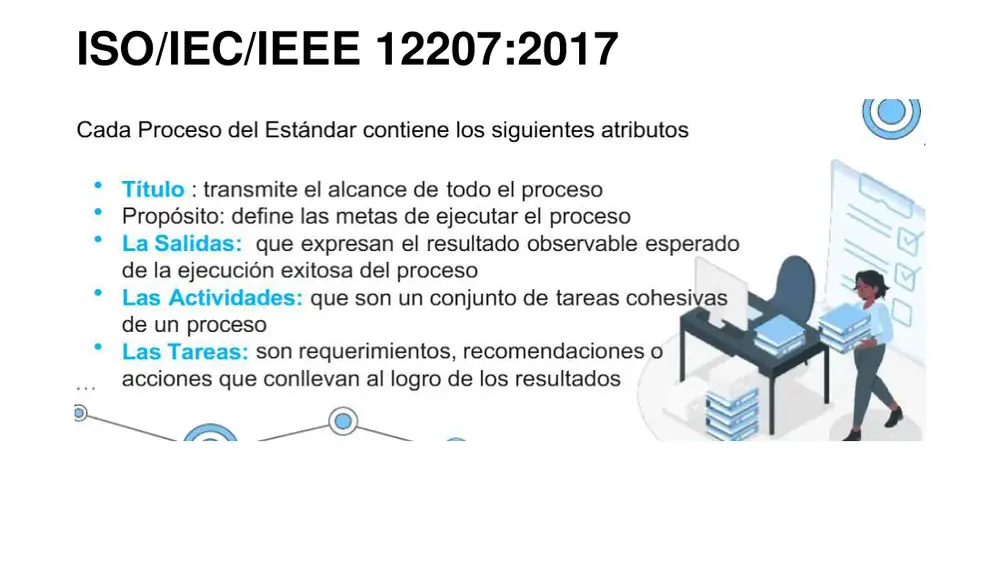

Sesión 6 · Práctica
Casos de examen sobre evaluación de la capacidad y la madurez del proceso de SW (Software): ISO/IEC 15504 (SPICE – Software Process Improvement and Capability dEtermination), la familia ISO/IEC 330xx (33001, 33002, 33004, 33020, 33061) y CMMI (Capability Maturity Model Integration) v1.3, V2.0 y V3.0 con sus métodos SCAMPI (Standard CMMI Appraisal Method for Process Improvement) A/B/C y Benchmark/Sustainment/Evaluation. La Sesión 6 no tiene diapositivas propias ni entregables, por eso los tres primeros casos se construyen sobre material REAL del curso: las diapositivas 7–13 de la Semana 04 (atributos de cada proceso de la ISO/IEC/IEEE 12207:2017, que la hacen utilizable como PRM – Process Reference Model), el entregable de la Semana 05 del G3 (evaluación con ISO/IEC 15504-5 en una microempresa peruana) y el Lab04 del G3 (diagnóstico CMMI de planificación y monitoreo). Luego vienen diez casos NUEVOS de complejidad muy alta (cálculo NPLF con sensibilidad, agregación de instancias, determinación de ML – Maturity Level, equivalent staging, agregación FI/LI/PI/NI/NY, elección de clase SCAMPI, CMMI V2.0 con GOV/II, perfil objetivo para CD – Capability Determination, dominios de CMMI V3.0 y un V/F tipo concurso). Cada solución trae tabla de causa raíz, al menos dos alternativas, justificación normativa con cláusula/nivel, KPI (Key Performance Indicator – Indicador Clave de Desempeño) con fórmula y meta, y errores frecuentes. Regla de oro: en evaluación de procesos no se califica la "nota" final sino la trazabilidad evidencia → indicador → atributo/meta → nivel.
Caso 1 · De la ISO/IEC/IEEE 12207:2017 a un PRM evaluable: auditoría de la app móvil SINEACE
Origen: Diapositivas 7–13 (clase, Semana 04 · "Modelos de Mejora del Proceso de SW") + caso SINEACE móvil del Entregable G3 (Semana 05) | Ampliado para el repaso
Dificultad: Muy altaEn la Semana 04 la profesora presentó la ISO/IEC/IEEE 12207:2017 como "modelo de mejora del proceso de desarrollo de SW" con 4 categorías y 30 procesos (Acuerdo, Habilitadores organizacionales, Gestión de proyectos y Técnicos) y explicó que cada proceso se describe con Título, Propósito, Salidas (resultados), Actividades y Tareas.

El G3 trabaja sobre la app móvil de SINEACE (Sistema Nacional de Evaluación, Acreditación y Certificación de la Calidad Educativa). Una auditoría interna de QA (Quality Assurance) registró 8 hallazgos:
- H1 Los requisitos cambian por WhatsApp sin registro ni aprobación; no hay RTM (Requirements Traceability Matrix).
- H2 No hay baseline de versiones del APK (Android Package); se publicó a Play Store un build compilado en la laptop de un desarrollador.
- H3 El cronograma no se compara con el avance real; el SPI (Schedule Performance Index) nunca se calculó.
- H4 Nadie revisa objetivamente si se siguen los procedimientos del SQAP (Software Quality Assurance Plan, IEEE 730).
- H5 No se identificaron riesgos de la integración con el servicio de RENIEC (Registro Nacional de Identificación y Estado Civil).
- H6 La elección Flutter vs nativo se hizo "por gusto" sin criterios ni alternativas documentadas.
- H7 No se mide la densidad de defectos por release.
- H8 Las pruebas de aceptación se hacen solo con el equipo, sin usuarios reales de las IES (Instituciones de Educación Superior).
La jefatura de TI (Tecnologías de la Información) quiere evaluar la capacidad de esos procesos antes de contratar una mejora, y dudar entre "usar CMMI" o "usar la ISO".
Se pide
- Mapee cada hallazgo a: proceso de la 12207:2017 (con su grupo), PA (Process Area) de CMMI-DEV v1.3 con su ML, y Practice Area de CMMI V2.0.
- Explique por qué la 12207 no es por sí sola un modelo de evaluación y qué le falta (PRM vs PAM vs marco de medición vs método).
- Indique cuántos hallazgos bloquean un eventual CMMI-DEV ML2 y cuáles solo importan para ML3.
- Proponga dos caminos de evaluación y defina KPI de seguimiento.
Ver solución propuesta
Problemas identificados
| H | Causa raíz | Proceso 12207:2017 (grupo) | CMMI-DEV v1.3 (ML) | CMMI V2.0 | Atributo/dimensión afectada |
|---|---|---|---|---|---|
| H1 | No existe procedimiento de control de cambios de requisitos | 6.4.2 Definición de necesidades y requisitos de interesados / 6.4.3 Definición de requisitos del sistema/SW (Técnico) | REQM (ML2) + RD (ML3) | RDM | Adecuación funcional (ISO/IEC 25010) |
| H2 | Sin SCM (Software Configuration Management) ni CI/CD (Continuous Integration / Continuous Delivery) | 6.3.5 Gestión de la configuración (Gestión de proyectos) | CM (ML2) | CM | Integridad, mantenibilidad |
| H3 | No hay medición del avance ni EVM (Earned Value Management) | 6.3.2 Evaluación y control del proyecto | PMC (ML2) | MC | Predictibilidad de plazo |
| H4 | No hay rol de QA independiente | 6.3.8 Aseguramiento de la calidad | PPQA (ML2) | PQA | Conformidad del proceso |
| H5 | Riesgo no identificado ni tratado | 6.3.4 Gestión de riesgos | RSKM (ML3) | RSK | Fiabilidad, disponibilidad |
| H6 | Decisiones técnicas sin criterios formales | 6.3.3 Gestión de decisiones | DAR (ML3) | DAR | Mantenibilidad, coste |
| H7 | Sin plan de medición GQM (Goal-Question-Metric) | 6.3.7 Medición | MA (ML2) | MPM | Capacidad de gestionar con datos |
| H8 | V&V (Verificación y Validación) confundidas; solo se verifica | 6.4.11 Validación (Técnico) | VAL (ML3) | VV | Satisfacción / usabilidad |
Respuesta 2: la 12207 aporta la dimensión de proceso: título, propósito y resultados (diap. 8). Eso la convierte en PRM. Para evaluar faltan: (a) un marco de medición (ISO/IEC 33020: CL – Capability Level 0–5, 9 PA – Process Attributes, escala NPLF – Not/Partially/Largely/Fully achieved); (b) un PAM (Process Assessment Model) con indicadores BP (Base Practices), WP (Work Products), GP (Generic Practices) y GR (Generic Resources): ISO/IEC 33061:2021, basado precisamente en la 12207:2017; (c) un proceso/método de evaluación conforme (ISO/IEC 33002). Respuesta 3: bloquean ML2 los hallazgos H1 (parte REQM), H2, H3, H4 y H7 = 5; H5, H6, H8 (y la parte RD de H1) son de ML3.
Alternativa A · Evaluación ISO/IEC 330xx con PRM 12207 (representación continua)
Evaluar con ISO/IEC 33002 (clase 2) + PAM ISO/IEC 33061 los 8 procesos hasta CL2. Resultado: perfil de capacidad por proceso (p.ej. CM CL0, QA CL0, Medición CL0, Requisitos CL1). Ventaja: continúa directamente lo que el G3 ya trabajó con la NTP-ISO/IEC 12207:2016 (S5); norma pública, sin licencia del modelo. Desventaja: no da un "nivel" único para licitaciones.
Alternativa B · SCAMPI C / Evaluation Appraisal de CMMI V2.0 con vista DEV ML2
Diagnóstico rápido (gap analysis) de RDM, CM, MC, PQA, MPM, PLAN, EST, PR, SAM + GOV e II. Resultado: brechas y riesgos, sin rating. Ventaja: prepara un futuro Benchmark si SINEACE exigiera ML a proveedores. Desventaja: coste del modelo (licencia ISACA) y del Lead Appraiser.
Alternativa C · Mejora primero, evaluación después (PDCA/PHVA)
Atacar H2 y H1 (los que más defectos generan aguas abajo) con Git + pipeline CI/CD + CCB (Configuration Control Board) y Jira con RTM; reevaluar a los 3 meses. Útil si el presupuesto es mínimo.
Justificación normativa
ISO/IEC 33004 (requisitos de PRM: cada proceso con propósito y resultados) → la 12207:2017 cumple (diap. 8). ISO/IEC 33020 cl. 5 (marco de medición, CL y PA). ISO/IEC 33061 (PAM SW). CMMI-DEV v1.3: REQM, PP, PMC, SAM, MA, PPQA, CM = ML2; RD, TS, PI, VER, VAL, OPF, OPD, OT, IPM, RSKM, DAR = ML3.
KPI para medir la mejora
| KPI | Fórmula | Meta |
|---|---|---|
| % requisitos trazados | requisitos con enlace a caso de prueba en RTM / total requisitos × 100 | ≥ 95 % |
| % releases desde baseline | releases generados por el pipeline desde un tag aprobado / total releases × 100 | 100 % |
| SPI | EV / PV | 0,95–1,05 |
| Cobertura de auditorías QA | procesos auditados en el trimestre / procesos del alcance × 100 | 100 % |
| Procesos en CL objetivo | procesos con CL ≥ 2 / 8 × 100 | ≥ 62,5 % (5/8) en 6 meses |
Cómo lo resolvieron los grupos
El G3 (S5) solo citó la evaluación de capacidad 15504-5 como técnica previa; aquí se completa con el mapeo explícito PRM → PAM → método, que es lo que suele preguntarse.
Caso 2 · Microempresa peruana evaluada con ISO/IEC 15504-5: antes y después de COMPETISOFT
Origen: Entregable G3 (Semana 05, "Norma ISO/IEC 12207", técnica a: evaluación de capacidad, con base en Horna Merino, 2015) | Preguntas ampliadas para el repaso
Dificultad: AltaUna microempresa de SW de Lima con 8 personas, cuyos clientes son entidades del sector público, hizo un diagnóstico con cuestionarios basados en el PAM ISO/IEC 15504-5 (PRM: ISO/IEC 12207:2008). Priorizó los procesos con las matrices de COMPETISOFT-PUCP (Pontificia Universidad Católica del Perú) y la técnica de grupo nominal, mejoró 3 procesos en un proyecto piloto y volvió a evaluarlos. El G3 reportó el grado de alcance del PA 1.1 (Process Performance):
| Proceso (12207:2008) | Antes | Después |
|---|---|---|
| Gestión de riesgos | 41 % | 79 % |
| Soporte a la aceptación del SW | 43 % | 78 % |
| Gestión de activos de reúso | 17 % | 52 % |
El gerente quiere anunciar en su web: "Somos nivel 1 de madurez ISO". Un cliente (una municipalidad) exige en sus TDR (Términos de Referencia) "procesos de riesgos y aceptación en CL2".
Se pide
- Califique cada valor en NPLF y en la escala refinada de ISO/IEC 33020 (P−/P+, L−/L+).
- Determine el CL antes y después de cada proceso y explique por qué "subieron a nivel 1".
- Critique el anuncio del gerente (capacidad vs madurez; 15504 vs 330xx).
- ¿Qué debe ocurrir con PA 1.1, PA 2.1 y PA 2.2 para cumplir los TDR? Proponga dos rutas y KPI.
Ver solución propuesta
Problemas identificados
| Proceso | Antes → Después (NPLF / refinada) | CL antes → después | Causa raíz de que no llegue a CL2 | Atributo afectado |
|---|---|---|---|---|
| Gestión de riesgos | P (P+) → L (L+) | CL0 → CL1 | PA 1.1 en 79 %: aún hay resultados (outcomes) no logrados, p.ej. seguimiento de riesgos | PA 1.1 < F; PA 2.x no evaluados |
| Soporte a la aceptación | P (P+) → L (L+) | CL0 → CL1 | Criterios de aceptación no acordados en todos los contratos | PA 1.1 < F |
| Gestión de activos de reúso | P (P−) → L (L−) | CL0 → CL1 | Repositorio (Subversion) sin catálogo ni clasificación | PA 1.1 apenas sobre 50 %: CL1 frágil |
Por qué CL1: CL1 exige PA 1.1 en L o F. 41 %, 43 % y 17 % están en P (>15–50 %) → CL0; 79 %, 78 % y 52 % están en L (>50–85 %) → CL1 "Performed/Realizado". Para CL2 se requiere PA 1.1 = F (>85 %) y PA 2.1, PA 2.2 en L o F. Anuncio del gerente: incorrecto por tres motivos: (a) CL es capacidad de un proceso, no madurez de la OU (Organizational Unit); (b) solo 3 procesos fueron evaluados; (c) la madurez organizacional exige un OMM (Organizational Maturity Model; 15504-7 → ISO/IEC 33004). Además la 15504 fue reemplazada por la familia 330xx; lo correcto sería "procesos X, Y, Z evaluados en CL1 según un PAM basado en 15504-5".
Alternativa A · Consolidar CL1 → CL2 en los 2 procesos de los TDR
Riesgos: cubrir todos los outcomes (identificar, analizar, tratar, monitorear) para PA 1.1 > 85 %; luego plan del proceso con responsables y recursos (PA 2.1) y control de versiones y revisión del registro de riesgos (PA 2.2). Igual con aceptación (criterios firmados, actas). Reevaluar con evaluación clase 2 (ISO/IEC 33002).
Alternativa B · Adoptar ISO/IEC 29110 (perfil Básico) como marco PYME
Para una VSE (Very Small Entity, <25 personas) el perfil Básico de ISO/IEC 29110 (S7) cubre PM (Project Management) y SI (Software Implementation) con riesgos y aceptación incluidos; su evaluación también sigue el estilo 15504/330xx. Ventaja: certificable, más barata; desventaja: no es lo que piden literalmente los TDR, hay que justificar equivalencia.
Justificación normativa
ISO/IEC 15504-2 cl. 5 / ISO/IEC 33020 cl. 5.2–5.3: escala NPLF (N 0–15 %, P >15–50 %, L >50–85 %, F >85–100 %) y regla de nivel (PA del nivel ≥ L, PA inferiores = F). ISO/IEC 15504-5 / 33061: PAM SW. ISO/IEC 33004 / 15504-7: madurez organizacional.
KPI para medir la mejora
| KPI | Fórmula | Meta |
|---|---|---|
| Logro PA 1.1 | outcomes logrados (con evidencia) / outcomes del proceso × 100 | > 85 % (F) |
| Riesgos con plan de respuesta | riesgos con respuesta y dueño / riesgos identificados × 100 | ≥ 90 % |
| Entregas aceptadas a la primera | entregas aceptadas sin observaciones / entregas × 100 | ≥ 80 % |
| Brecha al perfil objetivo | Σ (CL objetivo − CL actual) en procesos del TDR | 0 |
Cómo lo resolvieron los grupos
El G3 presentó este estudio como la "técnica más representativa" porque convierte la norma en referencia medible y muestra el antes/después. Le faltó explicitar que el salto es solo a CL1 y que reúso (52 %) quedó en el límite inferior de L.
Caso 3 · Lab04 del G3: "solo la mitad de las prácticas de planificación y de monitoreo" (CMMI-DEV v1.3)
Origen: Entregable G3 (Semana 04, Lab04 Actividad 01, sección 4.2 Auditorías de proceso) | Datos por práctica creados para el repaso
Dificultad: Muy altaEn el SQAP (IEEE 730) del Lab04, el G3 escribió que "el diagnóstico con CMMI mostró que solo se cumplía alrededor de la mitad de las prácticas sugeridas de planificación y de monitoreo y control". Un SCAMPI C posterior en la OU (2 proyectos) caracterizó las SP (Specific Practices) así (a nivel OU):
| PA | SG1 | SG2 | SG3 |
|---|---|---|---|
| PP (Project Planning) | SP1.1 FI · SP1.2 LI · SP1.3 FI · SP1.4 PI (esfuerzo estimado "a juicio" sin datos históricos) | SP2.1 FI · SP2.2 NI (no hay riesgos en el plan) · SP2.3 PI · SP2.4 LI · SP2.5 PI · SP2.6 NI · SP2.7 FI | SP3.1 LI · SP3.2 PI · SP3.3 PI |
| PMC (Project Monitoring and Control) | SP1.1 FI · SP1.2 LI · SP1.3 NI (riesgos no monitoreados) · SP1.4 PI · SP1.5 FI · SP1.6 FI · SP1.7 PI | SP2.1 LI · SP2.2 PI · SP2.3 NI (acciones correctivas no se cierran) | — |
El auditor de calidad mide indicadores semanales y mensuales. La gerencia pregunta si "con un poco más" ya podrían anunciar ML2.
Se pide
- Verifique cuantitativamente la frase "alrededor de la mitad" (% de SP en FI/LI por PA).
- Determine qué SG se satisfacen y si PP y PMC quedan satisfechas.
- ¿Puede un SCAMPI C dar ML? ¿Qué falta, además de PP y PMC, para un ML2?
- Identifique la causa raíz común entre PP y PMC y proponga dos alternativas con KPI.
Ver solución propuesta
1. PP: FI = 4, LI = 3, PI = 5, NI = 2 → (4+3)/14 = 50 %. PMC: FI = 3, LI = 2, PI = 3, NI = 2 → 5/10 = 50 %. La frase del G3 es exacta. 2. Una SG se satisface solo si todas sus SP están FI o LI (sin debilidad significativa): PP SG1 ✘ (SP1.4 PI), SG2 ✘, SG3 ✘; PMC SG1 ✘, SG2 ✘ → ninguna SG satisfecha; PP y PMC no satisfechas. 3. No: SCAMPI C (y B) no otorgan rating; solo SCAMPI A. Además ML2 exige las 7 PA (REQM, PP, PMC, SAM, MA, PPQA, CM) con sus SG y la GG2 (GP2.1–GP2.10) satisfechas.
Problemas identificados
| Problema | Causa raíz | Evidencia | Meta/práctica afectada |
|---|---|---|---|
| Estimaciones poco fiables | No existe repositorio histórico de medidas (MA inexistente) | PP SP1.4 PI | PP SG1 |
| Riesgos ausentes del plan y del monitoreo | No hay procedimiento de riesgos; se confía en la experiencia del jefe de proyecto | PP SP2.2 NI y PMC SP1.3 NI | PP SG2, PMC SG1 |
| Acciones correctivas abiertas indefinidamente | No hay dueño ni fecha de cierre en el registro de acciones | PMC SP2.3 NI | PMC SG2 |
| Compromiso débil con el plan | El plan no se revisa con interesados ni se reconcilian recursos | PP SP3.2–3.3 PI | PP SG3 |
Causa raíz común: ausencia de un ciclo "planificar con riesgos → monitorear riesgos → cerrar acciones", es decir, la gestión del riesgo y la medición no están institucionalizadas (GP2.2 Planificar el proceso y GP2.8 Monitorear y controlar el proceso).
Alternativa A · Paquete mínimo ML2 en 6 meses
Plantilla de plan con sección de riesgos (PP SP2.2), registro de riesgos revisado en cada sprint review (PMC SP1.3), tablero de acciones con dueño y fecha (PMC SP2.3), base histórica de esfuerzo en Jira (PP SP1.4 apoyado por MA). Luego SCAMPI B para verificar despliegue y finalmente SCAMPI A.
Alternativa B · Enfoque por capacidad (continua) solo en PP, PMC y MA
Si no se necesita ML (el cliente no lo exige), llevar PP, PMC y MA a CL2 y medir el impacto en desviación de plazo. Más barato; el resultado es un perfil, no un nivel.
Justificación normativa
CMMI-DEV v1.3 (CMU/SEI-2010-TR-033): PP SG1–SG3 (14 SP), PMC SG1–SG2 (10 SP), regla de satisfacción de metas del MDD SCAMPI A v1.3; GG2 obligatoria para ML2. IEEE 730 (SQAP del Lab04) como instrumento de PPQA.
KPI para medir la mejora
| KPI | Fórmula | Meta |
|---|---|---|
| % SP en FI/LI (PP+PMC) | (SP FI + SP LI) / 24 × 100 | 100 % antes de SCAMPI A |
| Error de estimación (MRE) | |esfuerzo real − estimado| / real × 100 | ≤ 20 % |
| Acciones correctivas cerradas a tiempo | acciones cerradas en plazo / acciones abiertas × 100 | ≥ 90 % |
| Riesgos revisados por sprint | sprints con revisión del registro de riesgos / sprints × 100 | 100 % |
Cómo lo resolvieron los grupos
El G3 usó el diagnóstico solo como justificación del SQAP. Este caso muestra cómo convertir esa frase en una caracterización formal FI/LI/PI/NI, que es lo que un examen de la Sesión 6 pide.
Caso 4 · YapuPay: calificar PA con ponderación aditiva y análisis de sensibilidad (ISO/IEC 33020)
Origen: Web: ISO/IEC 15504 (escala NPLF) y Jung, "Process attribute rating and sensitivity analysis" | Datos creados para el repaso
Dificultad: Muy altaUn equipo de evaluación (lead assessor + 2 evaluadores) aplica un PAM conforme a ISO/IEC 15504-5 al proceso Gestión de Requisitos de la fintech limeña YapuPay (OU de 40 personas). Para cada indicador se registró el % de logro según evidencias objetivas (actas, SRS – Software Requirements Specification, RTM, tickets de Jira, entrevistas):
| PA | Indicadores | % de logro |
|---|---|---|
| PA 1.1 Process Performance | BP1–BP5 (BP3 = trazabilidad) | 100 · 90 · 80 · 85 · 70 |
| PA 2.1 Performance Management | GP 2.1.1–2.1.7 | 90 · 80 · 60 · 50 · 100 · 70 · 40 |
| PA 2.2 Work Product Management | GP 2.2.1–2.2.4 | 60 · 50 · 80 · 30 |
| PA 3.1 Process Definition | GP 3.1.1–3.1.5 | 95 · 90 · 90 · 85 · 90 |
Pesos iguales salvo indicación. El método de agregación debe documentarse en el registro de evaluación (assessment record).
Se pide
- Calcule el logro de cada PA, califíquelo en NPLF y en escala refinada.
- Determine el CL del proceso.
- Recalcule PA 1.1 si BP3 (trazabilidad) pesa el doble. ¿Cambia el CL?
- ¿Cuánto debe subir BP5 para que el CL cambie, con pesos iguales y con BP3 doble?
- ¿Por qué PA 3.1 = F no ayuda? Proponga dos alternativas de mejora y KPI.
Ver solución propuesta
1. PA 1.1 = 425/5 = 85,0 % → L (F exige más de 85 %; refinada L+). PA 2.1 = 490/7 = 70,0 % → L (L+). PA 2.2 = 220/4 = 55,0 % → L (L−). PA 3.1 = 450/5 = 90 % → F. 2. CL1 exige PA 1.1 ∈ {L,F} ✔. CL2 exige PA 2.1 y 2.2 ∈ {L,F} y PA 1.1 = F ✘ → CL1 (Performed). 3. (100+90+2×80+85+70)/6 = 505/6 = 84,17 % → L; sigue CL1 y se aleja del umbral. 4. Pesos iguales: se necesita suma > 425 → BP5 ≥ 71 % ⇒ 426/5 = 85,2 % → F → CL2. Con BP3 doble: suma > 510 → BP5 ≥ 76 % (510+1 = 511 ⇒ 85,17 %). 5. La regla es acumulativa: un PA superior no compensa uno inferior. PA 3.1 = F solo dice que existe un proceso estándar bien definido, pero no que se ejecute plenamente en el proyecto.
Problemas identificados
| Problema | Causa raíz | Evidencia | PA afectado |
|---|---|---|---|
| Validación con el cliente incompleta | No se agenda revisión del SRS con el Product Owner | BP5 = 70 % | PA 1.1 |
| Recursos del proceso no asegurados | Analista de requisitos compartido con soporte | GP 2.1.7 = 40 %, GP 2.1.4 = 50 % | PA 2.1 |
| WP sin control | SRS en Google Docs sin versión ni revisión formal | GP 2.2.4 = 30 % | PA 2.2 |
| Calificación frágil | Valores en el umbral de 85 % | PA 1.1 = 85,0 % | Fiabilidad de la evaluación |
Alternativa A · "Pasar el umbral" de PA 1.1 primero
Institucionalizar la revisión del SRS con el PO (Product Owner) en cada sprint (sube BP5) y completar RTM (BP3). Costo bajo, efecto inmediato en el CL: es la palanca de mayor rendimiento.
Alternativa B · Robustecer PA 2.x para que CL2 no sea frágil
Asignar analista dedicado (GP 2.1.7), mover SRS a Confluence/Git con versionado y revisiones por pares (GP 2.2.4). Más costoso, pero evita que el CL2 caiga en la siguiente evaluación.
Justificación normativa
ISO/IEC 33020:2019 cl. 5 (escala, PA, regla de nivel) y cl. 5.4 (métodos de agregación R1/R2/R3: el método y los pesos deben documentarse). ISO/IEC 33002 (registro de la evaluación, trazabilidad a evidencias).
KPI para medir la mejora
| KPI | Fórmula | Meta |
|---|---|---|
| Logro PA 1.1 | Σ (wᵢ × logroᵢ) / Σ wᵢ | ≥ 90 % (margen de 5 puntos sobre el umbral) |
| Requisitos validados con el PO | historias aceptadas en review / historias del sprint × 100 | ≥ 95 % |
| Volatilidad de requisitos | cambios de requisitos / requisitos base × 100 por release | ≤ 15 % |
| Margen al umbral | logro PA − 85 | ≥ +5 en todos los PA de CL ≤ 2 |
Caso 5 · SUNAT: agregar instancias de proceso y comparar con el perfil objetivo
Origen: Web: ISO/IEC 15504 → 33000 y ficha ISO/IEC TR 15504 (ANSI) | Datos creados para el repaso
Dificultad: Muy altaEl Área de TI de una entidad pública tipo SUNAT (Superintendencia Nacional de Aduanas y de Administración Tributaria) evalúa 3 proyectos (instancias) del proceso SCM. Logro (%) de cada PA por instancia:
| PA | Proy. A (SIRE) | Proy. B (Clave SOL) | Proy. C (Factura electrónica) |
|---|---|---|---|
| PA 1.1 | 95 | 90 | 88 |
| PA 2.1 | 90 | 60 | 40 |
| PA 2.2 | 88 | 70 | 55 |
El pliego de un contrato con un operador exige el perfil objetivo: SCM CL2, QA CL2, Planificación (PP) CL2 y Requisitos (REQ) CL2. Perfil actual de los otros procesos: PP = CL2, QA = CL1, REQ = CL0.
Se pide
- Califique cada PA a nivel OU promediando instancias y determine el CL de SCM.
- Repita con el criterio "mínimo" y con la "mediana". ¿Qué oculta el promedio?
- Calcule la brecha frente al perfil objetivo y priorice.
- ¿Puede afirmarse que "la entidad es nivel 2"? Proponga dos alternativas y KPI.
Ver solución propuesta
1. PA 1.1 = 273/3 = 91 → F; PA 2.1 = 190/3 = 63,3 → L (L−); PA 2.2 = 213/3 = 71 → L (L+) ⇒ SCM CL2. 2. Mínimo: PA 1.1 = 88 (F), PA 2.1 = 40 (P), PA 2.2 = 55 (L) → CL1. Mediana: 90 (F), 60 (L), 70 (L) → CL2. El promedio oculta que el Proy. C tiene PA 2.1 en P: es un CL2 frágil. 3. Brechas (objetivo − actual): SCM 0 (frágil), PP 0, QA −1, REQ −2. Prioridad: REQ (mayor brecha y origen de defectos aguas abajo) → QA → vigilancia de SCM en el Proy. C. 4. No en sentido CMMI: 15504/330xx producen perfiles por proceso; un ML organizacional exige un OMM (ISO/IEC 33004) o CMMI escalonado.
Problemas identificados
| Problema | Causa raíz | Evidencia | Dimensión afectada |
|---|---|---|---|
| SCM no gestionado en Factura electrónica | Proyecto heredado de un proveedor; sin plan SCMP (Software Configuration Management Plan) | PA 2.1 = 40 % en C | Capacidad (PA 2.1) |
| REQ en CL0 | Requisitos normativos (resoluciones de superintendencia) llegan por oficio, sin proceso de ingeniería de requisitos | Perfil actual REQ = 0 | Adecuación funcional |
| QA en CL1 | Auditorías QA solo reactivas, sin plan | QA = 1 | Conformidad |
| Riesgo de evaluación engañosa | Método de agregación por media no declarado | Media vs mínimo dan CL distintos | Confiabilidad del resultado |
Alternativa A · Cerrar brechas por riesgo (REQ → QA → SCM-C)
Proceso de requisitos con trazabilidad norma→requisito→prueba; plan de QA con auditorías programadas; SCMP en el Proy. C. Cumple el pliego en ~9 meses.
Alternativa B · Estandarizar SCM a nivel OU (apuntar a CL3)
Definir un proceso SCM estándar (PA 3.1) y desplegarlo en A, B y C (PA 3.2). Elimina la dispersión de raíz, pero no resuelve REQ: debe combinarse con A.
Justificación normativa
ISO/IEC 33020 cl. 5.4 (agregación de instancias, métodos R1–R3); ISO/IEC 33004 (OMM) y 15504-9 (perfiles objetivo); ISO/IEC 33014 (guía de mejora de procesos) para priorizar brechas.
KPI para medir la mejora
| KPI | Fórmula | Meta |
|---|---|---|
| Brecha total de perfil | Σ max(0, CL objetivo − CL actual) | 0 en 12 meses |
| Dispersión de PA entre instancias | máx(logro) − mín(logro) por PA | ≤ 20 puntos |
| Instancias en CL objetivo | instancias con CL ≥ objetivo / instancias × 100 | 100 % |
| Defectos por requisito mal definido | defectos con causa "requisito" / defectos totales × 100 | ≤ 15 % |
Caso 6 · AndesSoft y la licitación del MEF: ¿qué ML otorga el SCAMPI A?
Origen: Web: banco de preguntas CMMI/MPS.BR (CESPE/FCC) | Datos creados para el repaso
Dificultad: Muy altaAndesSoft SAC (120 personas, Lima) postula a una licitación del MEF (Ministerio de Economía y Finanzas) vía SEACE (Sistema Electrónico de Contrataciones del Estado) cuyas bases exigen CMMI-DEV ML3 vigente. Resultado del SCAMPI A v1.3 (Lead Appraiser certificado, equipo de 5, OU = "Unidad de Desarrollo Lima", 4 proyectos muestreados):
- PA de ML2: REQM, PP, PMC, MA, PPQA, CM con todas sus SG y la GG2 satisfechas; SAM declarada no aplicable (no subcontratan).
- PA de ML3: RD, TS, PI, VER, VAL, OPF, OPD, IPM, RSKM, DAR con SG y GG3 satisfechas; OT con SG1 satisfecha y SG2 (Provide Training) no satisfecha.
- Hallazgo adicional: MA y PPQA satisfacen GG2 pero no GG3: cada proyecto mide y audita "a su manera", no con el proceso definido de la organización.
- El SCAMPI A fue en marzo de 2024; la licitación cierra en abril de 2027.
Se pide
- Determine el ML resultante y justifique por niveles.
- ¿Es válido excluir SAM? ¿Cuándo dejaría de serlo?
- Ordene las acciones para llegar a ML3 y elija el método de valoración adecuado.
- ¿Podrá AndesSoft presentar el resultado en abril de 2027? Proponga dos alternativas y KPI.
Ver solución propuesta
1. ML2: las 7 PA de ML2 satisfechas (SAM n/a) con GG2 ✔ → ML2. ML3 exige todas las PA de ML2 y ML3 satisfechas con GG3 en todas (también en las de ML2): falla OT SG2 y GG3 de MA y PPQA → ✘. Resultado: ML2. 2. Sí, si la OU no tiene acuerdos con proveedores en el alcance y el Lead Appraiser lo acepta y lo registra. Deja de serlo si, por ejemplo, contratan un QA externo o un proveedor de desarrollo móvil. 3. (a) Institucionalizar MA y PPQA como procesos definidos: GP3.1 (proceso definido desde la OPAL – Organization's Process Asset Library) y GP3.2 (recolectar experiencias); (b) OT SG2: ejecutar el plan de formación, registros y evaluación de efectividad; (c) SCAMPI B para verificar despliegue; (d) nuevo SCAMPI A. 4. No con ML3: el rating obtenido es ML2. Además, un SCAMPI A de marzo de 2024 vence en marzo de 2027 (vigencia 3 años): aun el ML2 estaría vencido en abril de 2027. Hoy la valoración debe hacerse con V2.0/V3.0 (Benchmark), ya que v1.3 está retirada.
Problemas identificados
| Problema | Causa raíz | Evidencia | Meta afectada |
|---|---|---|---|
| Formación no ejecutada | Plan de OT (Organizational Training) sin presupuesto ni registro | OT SG2 no satisfecha | OT SG2 |
| MA no estandarizada | No existe repositorio organizacional de medidas | Cada proyecto con KPI distintos | GG3 en MA |
| PPQA no estandarizada | Checklists de auditoría propios por proyecto | No hay checklist en la OPAL | GG3 en PPQA |
| Rating por vencer | No se planificó la renovación | SCAMPI A de 03/2024 | Vigencia |
Alternativa A · Benchmark V2.0/V3.0 vista DEV ML3 en el 1.er trimestre de 2027
Corregir las 3 brechas en 6–8 meses, Evaluation Appraisal de verificación y Benchmark antes de abril de 2027. Requiere migrar evidencias de v1.3 (GG/GP) a V2.0 (GOV, II, Practice Areas).
Alternativa B · Consorcio con un socio ML3
Postular en consorcio con una empresa que tenga Benchmark ML3 vigente en el PARS (Published Appraisal Results System), verificando que su OU cubra a quienes harán el trabajo. Rápido, pero depende de un tercero y AndesSoft no mejora sus procesos.
Justificación normativa
CMMI-DEV v1.3: reglas de ML escalonado (ML3 = PA ML2+ML3 con GG3); MDD SCAMPI A v1.3 (aplicabilidad de SAM, vigencia 3 años, PARS); MDD V2.0 (Benchmark, Sustainment, Evaluation, APR – Action Plan Reappraisal).
KPI para medir la mejora
| KPI | Fórmula | Meta |
|---|---|---|
| Cumplimiento del plan de formación | horas de formación ejecutadas / horas planificadas × 100 | ≥ 95 % |
| Proyectos con proceso estándar MA/PPQA | proyectos usando plantillas OPAL / proyectos activos × 100 | 100 % |
| Prácticas FI/LI en evaluación previa | prácticas FI o LI / prácticas evaluadas × 100 | 100 % (sin PI/NI) |
| Días de vigencia restante | fecha de expiración − fecha de cierre de licitación | > 0 |
Caso 7 · Equivalent staging: de un perfil de capacidad continuo a un ML
Origen: Web: banco de preguntas CMMI (escala 0–5 vs 1–5) | Datos creados para el repaso
Dificultad: Muy altaUna consultora de Arequipa que trabaja para Interbank fue evaluada en representación continua (CMMI-DEV v1.3, CL0–CL3). Perfil obtenido (achievement profile):
| Grupo | PA y CL |
|---|---|
| PA de ML2 | REQM 3 · PP 3 · PMC 3 · SAM 3 · MA 3 · PPQA 3 · CM 2 |
| PA de ML3 | RD 3 · TS 3 · PI 3 · VER 3 · VAL 3 · OPF 3 · OPD 3 · OT 3 · IPM 3 · RSKM 3 · DAR 3 |
| PA de ML4 | OPP 3 · QPM 3 |
| PA de ML5 | OPM 1 · CAR 3 |
El cliente pide "ML4 como mínimo" para un servicio de banca móvil.
Se pide
- Enuncie las reglas de equivalent staging para ML2–ML5.
- Determine el ML equivalente actual.
- Determine el ML si CM sube a CL3, y qué falta para ML5.
- Explique por qué no existe ML0 en v1.3 y por qué no existe CL4 en la continua de v1.3. Proponga dos alternativas y KPI.
Ver solución propuesta
1. Perfil 2: PA de ML2 en CL2. Perfil 3: PA de ML2 y ML3 en CL3. Perfil 4: perfil 3 + OPP y QPM en CL3. Perfil 5: perfil 4 + OPM y CAR en CL3. 2. Perfil 2 ✔ (CM = 2 alcanza). Perfil 3 ✘ (CM = 2 < 3) → ML2. ¡Un solo PA baja dos niveles posibles! 3. Con CM = 3: perfil 3 ✔, perfil 4 ✔ (OPP, QPM = 3) → ML4; perfil 5 ✘ por OPM = 1. Falta llevar OPM a CL3 (seleccionar y desplegar mejoras incrementales e innovadoras con base en análisis cuantitativo, institucionalizado con GG2 y GG3). 4. La escalonada va de ML1 (Initial, sin requisitos) a ML5; la continua de CL0 (Incomplete) a CL3 (Defined). En v1.1/v1.2 la continua tenía CL4–CL5, pero v1.3 los eliminó (y las GG4/GG5): lo "cuantitativo" se alcanza con las PA de alta madurez (OPP, QPM, OPM, CAR), no con niveles de capacidad. En V2.0+ sí hay ML0–ML5 y CL0–CL5.
Problemas identificados
| Problema | Causa raíz | Evidencia | Efecto |
|---|---|---|---|
| CM no definido organizacionalmente | Cada proyecto usa su propio flujo Git (GitFlow, trunk-based) sin estándar en la OPAL | CM = CL2 (falta GG3) | Bloquea ML3 y ML4 |
| OPM solo "realizado" | Las mejoras se implantan por iniciativa individual, sin análisis de beneficio ni pilotos | OPM = CL1 | Bloquea ML5 |
Alternativa A · Corregir CM y pedir Benchmark ML4
Estandarizar el flujo de ramas, la política de baselines y el CCB en la OPAL; desplegarlo en todos los proyectos (GP3.1, GP3.2). Costo bajo, beneficio máximo: dos niveles de golpe.
Alternativa B · Ir directo a ML5
Además de CM, institucionalizar OPM (pilotos de mejora con hipótesis estadística, p.ej. test A/B de pruebas automatizadas). Solo se justifica si hay un objetivo de negocio que lo pague; el cliente pide ML4.
Justificación normativa
CMMI-DEV v1.3, cap. "Equivalent Staging" (target profiles 2–5); componentes requeridos GG2/GG3; OPM sustituye a OID en v1.3.
KPI para medir la mejora
| KPI | Fórmula | Meta |
|---|---|---|
| % PA en CL3 | PA con CL3 / 22 × 100 | ≥ 90,9 % (20/22) para ML4; 100 % para ML5 |
| Builds desde rama estándar | builds desde el flujo estándar / builds totales × 100 | 100 % |
| Mejoras piloteadas con evidencia | mejoras con piloto y análisis estadístico / mejoras desplegadas × 100 | ≥ 80 % (si va a ML5) |
Caso 8 · Agregación FI/LI/PI/NI/NY a nivel OU en un SCAMPI A
Origen: Web: MDD SCAMPI A v1.3 (SEI) | Datos creados para el repaso
Dificultad: Muy altaEn el SCAMPI A de una fábrica de SW que atiende al BCP (Banco de Crédito del Perú), el equipo caracterizó por instancia (proyecto) tres prácticas de la muestra de 4 proyectos:
| Práctica | P1 (banca móvil) | P2 (core de créditos) | P3 (nuevo portal, fase de requisitos) | P4 (CRM) |
|---|---|---|---|---|
| VER SP2.2 Conduct Peer Reviews | FI | LI | NY | FI |
| PPQA SP1.1 Objectively Evaluate Processes | FI | PI | FI | NI |
| VAL SP2.1 Perform Validation | FI | FI | NY | LI |
Las demás prácticas de ML2 y ML3 están FI en todas las instancias, salvo lo indicado. La empresa aspira a ML3.
Se pide
- Explique qué significa cada código y por qué P3 tiene NY.
- Agregue cada práctica a nivel OU y diga qué meta se ve afectada.
- Determine el ML resultante.
- Proponga dos alternativas para el plan de acción y KPI.
Ver solución propuesta
1. FI = Fully Implemented (evidencia suficiente, sin debilidades); LI = Largely Implemented (con debilidades menores); PI = Partially Implemented (debilidades sustanciales); NI = Not Implemented; NY = Not Yet (el proyecto aún no llega a la fase en que se ejecuta la práctica: P3 no tiene productos de trabajo revisables ni nada que validar). 2. VER SP2.2: todas FI/LI/NY con al menos una LI → LI (VER SG2 puede satisfacerse si la debilidad no es significativa). VAL SP2.1: FI, FI, NY, LI → LI. PPQA SP1.1: hay PI y NI → juicio del equipo; con 2 de 4 proyectos sin evaluación objetiva de procesos lo razonable es PI (o NI) → PPQA SG1 no satisfecha. 3. PPQA es PA de ML2: si no se satisface, no hay ML2 y, por tanto, tampoco ML3 → ML1, aunque el 99 % de las demás prácticas sea FI.
Problemas identificados
| Problema | Causa raíz | Evidencia | Meta afectada |
|---|---|---|---|
| Sin auditoría de procesos en P2 y P4 | El rol QA se asigna "si sobra tiempo"; no hay calendario de auditorías en el SQAP | PI y NI en PPQA SP1.1 | PPQA SG1 → ML2 |
| Revisiones por pares incompletas en P2 | Revisiones solo de código, no de diseño | LI en VER SP2.2 | VER SG2 (riesgo menor) |
| Validación parcial en P4 | UAT (User Acceptance Testing) con usuarios clave del área, no con agencias | LI en VAL SP2.1 | VAL SG2 (riesgo menor) |
Alternativa A · APR (Action Plan Reappraisal) / reevaluación focalizada
Si la debilidad es aislada y el Lead Appraiser lo permite, documentar un plan de acción (auditorías QA en P2 y P4 durante 3 meses) y reevaluar solo PPQA. Rápido y barato.
Alternativa B · QA independiente como servicio organizacional
Crear un pool de auditores QA (independencia organizacional del SQAP, IEEE 730) con calendario por proyecto y nueva SCAMPI A completa en 9 meses. Más caro, pero ataca la causa raíz (QA dependiente del proyecto).
Justificación normativa
MDD SCAMPI A v1.3: caracterización de prácticas por instancia y agregación a nivel OU; reglas de satisfacción de metas; CMMI-DEV v1.3: PPQA es PA de soporte de ML2; IEEE 730-2014 (independencia del aseguramiento de calidad).
KPI para medir la mejora
| KPI | Fórmula | Meta |
|---|---|---|
| Cobertura de auditorías de proceso | proyectos auditados en el mes / proyectos activos × 100 | 100 % |
| No conformidades cerradas en plazo | NC cerradas a tiempo / NC detectadas × 100 | ≥ 90 % |
| Cobertura de revisión por pares | WP revisados por pares / WP planificados para revisión × 100 | ≥ 95 % |
Caso 9 · Inca Digital: elegir la clase de valoración correcta (SCAMPI v1.3 vs MDD V2.0)
Origen: Web: Spyrosoft, métodos de valoración CMMI 2.0 y SCAMPI (Wikipedia) | Caso creado para el repaso
Dificultad: AltaInca Digital (60 personas, Lima) tiene tres necesidades en 2026, con un presupuesto total de USD 45 000:
- (a) Marzo: diagnóstico rápido y barato con un consultor para ver brechas frente a ML2; basta con revisar documentos.
- (b) Agosto: verificar si las acciones del plan de mejora ya funcionan en 2 proyectos piloto, con entrevistas y documentos, sin publicar nada.
- (c) Noviembre: obtener una calificación oficial para una licitación de Interbank que pide "ML2 o superior, publicado".
- (d) 2028: mantener el nivel sin repetir una valoración completa.
Se pide
- Asigne la clase SCAMPI v1.3 y el método MDD V2.0/V3.0 a cada necesidad.
- Indique los requisitos mínimos de (c): equipo, evidencia, muestreo, publicación, vigencia.
- ¿Qué ocurre si en (c) una sola Practice Area no alcanza nivel 2?
- Proponga dos estrategias de calendario y KPI.
Ver solución propuesta
| Necesidad | SCAMPI v1.3 | MDD V2.0/V3.0 | ¿Rating? | Por qué |
|---|---|---|---|---|
| (a) | SCAMPI C | Evaluation Appraisal | No | Bajo rigor, puede usar un solo tipo de evidencia; ideal para gap analysis |
| (b) | SCAMPI B | Evaluation Appraisal | No | Más rigor: artefactos + afirmaciones; verifica despliegue |
| (c) | SCAMPI A | Benchmark Appraisal | Sí | Única que otorga ML/CL oficial y se publica en PARS |
| (d) | (nueva SCAMPI A) | Sustainment Appraisal | Mantiene | Muestra reducida de Practice Areas; extiende la validez sin Benchmark completo |
2. Lead Appraiser certificado por el CMMI Institute (ISACA); equipo mínimo de 4 personas incluido el líder, formados y sin conflicto de interés; evidencia objetiva corroborada (artefactos + afirmaciones); muestreo de proyectos representativo (en V2.0, aleatorio, generado por el sistema del CMMI Institute); plan de valoración, hallazgos, ADS (Appraisal Disclosure Statement), publicación en PARS; vigencia 3 años. 3. No hay ML2 "parcial": la valoración no otorga el nivel. Si la debilidad es puntual, puede usarse un APR en un plazo corto para reevaluar solo lo fallado.
Problemas identificados
| Riesgo | Causa raíz | Evidencia | Impacto |
|---|---|---|---|
| Gastar el presupuesto en (a) y (b) | Confundir rigor con utilidad | USD 45 000 totales | No alcanza para el Benchmark |
| Muestra sesgada en (c) | La empresa quiere mostrar solo los "mejores" proyectos | V2.0 usa muestreo aleatorio | Caída del nivel |
| Calendario apretado | Solo 3 meses entre (b) y (c) | Agosto → noviembre | Debilidades sin cerrar |
Alternativa A · Ruta completa (C → B → A)
Evaluation barata en marzo (consultor interno + 1 externo), Evaluation formal en agosto y Benchmark en noviembre; reservar ~60 % del presupuesto para el Benchmark.
Alternativa B · Saltar (b) y usar ese dinero en mejora
Tras el diagnóstico de marzo, invertir en mejora y hacer una autoevaluación interna con checklist V2.0; ir al Benchmark en noviembre. Más riesgosa (sin verificación externa intermedia), pero más barata.
Justificación normativa
ARC (Appraisal Requirements for CMMI) v1.3 y MDD SCAMPI A/B/C v1.3; MDD CMMI V2.0/V3.0 (Benchmark, Sustainment, Evaluation, APR).
KPI para medir la mejora
| KPI | Fórmula | Meta |
|---|---|---|
| Brechas cerradas entre (a) y (c) | brechas cerradas / brechas detectadas en (a) × 100 | 100 % antes del Benchmark |
| Costo de valoración por rating | costo total de valoraciones / ratings obtenidos | ≤ USD 45 000 |
| Prácticas nivel 2 implementadas | prácticas nivel 2 implementadas / total del ML2 × 100 | 100 % |
Caso 10 · Rímac Labs en CMMI V2.0: Practice Groups, CL por Practice Area y el papel de GOV/II
Origen: Web: ITG, CMMI V2.0 vs v1.3 y Process Group, qué cambió en V2.0 | Datos creados para el repaso
Dificultad: Muy altaRímac Labs, área de innovación de una aseguradora, encarga una Evaluation Appraisal con la vista DEV de CMMI V2.0. Resultados por Practice Area (prácticas de cada Practice Group/nivel):
| Practice Area | Nivel 1 | Nivel 2 | Nivel 3 |
|---|---|---|---|
| PLAN (Planning) | Completo | Completo | Parcial |
| EST (Estimating) | Completo | Completo | — |
| MC (Monitor and Control) | Completo | Falta 1 práctica (acciones correctivas) | — |
| RDM, CM, PQA, PR, SAM, MPM, PAD | Completo | Completo | — |
| GOV (Governance) | Completo | Completo | — |
| II (Implementation Infrastructure) | Completo | No implementado (no hay recursos ni formación asignados a los procesos) | — |
El gerente afirma: "En v1.3 ya teníamos GG2 en todo; II es burocracia nueva que podemos ignorar".
Se pide
- Determine el CL de PLAN, MC e II.
- ¿Alcanzaría ML2 en un Benchmark? Justifique.
- Explique la equivalencia GG/GP (v1.3) ↔ GOV/II (V2.0) y refute al gerente.
- Proponga dos alternativas y KPI.
Ver solución propuesta
1. En V2.0 el CL de una Practice Area es el nivel más alto cuyo Practice Group y todos los inferiores están completos: PLAN = CL2 (nivel 3 parcial), MC = CL1, II = CL1. 2. No. ML2 exige nivel 2 completo en todas las Practice Areas predefinidas de ML2 de la vista, incluidas GOV e II. Fallan MC e II → ML1 (y esta Evaluation, además, no da rating). 3. v1.3 institucionalizaba con GG2/GG3 y sus GP dentro de cada PA (GP2.1 política, GP2.2 plan, GP2.3 recursos, GP2.5 formación, GP2.10 revisión con la dirección, GP3.1 proceso definido…). V2.0 trasladó eso a dos Practice Areas propias: GOV (la alta dirección patrocina, financia y supervisa los procesos ≈ GP2.1, GP2.10) e II (recursos, formación, uso efectivo y mantenimiento de los procesos ≈ GP2.2–GP2.8, GP3.1). Ignorar II es ignorar la institucionalización: el gerente se equivoca.
Problemas identificados
| Problema | Causa raíz | Evidencia | Practice Area |
|---|---|---|---|
| Acciones correctivas sin seguimiento | El tablero solo muestra avance, no desviaciones ni acciones | MC nivel 2 incompleto | MC |
| Procesos sin recursos ni formación | La dirección cree que "los procesos se sostienen solos" | II nivel 2 no implementado | II |
| Modelo mental desactualizado | Migración de v1.3 a V2.0 sin capacitación | Declaración del gerente | GOV (patrocinio) |
Alternativa A · Cerrar MC e II y pedir Benchmark ML2
Asignar presupuesto y horas de formación por proceso (II 2), registro de acciones correctivas con dueño y fecha (MC 2). En 4–6 meses puede ir al Benchmark.
Alternativa B · Usar el impulso de PLAN para ML3
Completar además PLAN 3, PAD, PCM, OT, RSK, DAR, VV, TS, PI en nivel 3 y GOV/II nivel 3. Mayor valor de negocio a 18 meses, pero retrasa la calificación.
Justificación normativa
CMMI V2.0 (CMMI Institute/ISACA, 2018): estructura Practice Area → Practice Groups (niveles 1–5); reglas de CL y ML; GOV e II obligatorias en toda vista de madurez; MDD V2.0 (Evaluation sin rating).
KPI para medir la mejora
| KPI | Fórmula | Meta |
|---|---|---|
| Procesos con recursos asignados | procesos con presupuesto y responsable / procesos del alcance × 100 | 100 % |
| Personal formado en su proceso | personas formadas / personas que ejecutan el proceso × 100 | ≥ 90 % |
| Desviaciones con acción correctiva | desviaciones > umbral con acción registrada / desviaciones > umbral × 100 | 100 % |
Caso 11 · RENIEC selecciona proveedor: perfil objetivo y determinación de capacidad (CD)
Origen: Web: vista previa de ISO/IEC 33020:2019 y PARS del CMMI Institute | Caso creado para el repaso
Dificultad: Muy altaRENIEC terceriza el desarrollo de un módulo biométrico crítico (cotejo de huellas para el DNIe – Documento Nacional de Identidad electrónico). Se presentan dos postores:
| Proceso (PRM 12207:2017 vía 33061) | Postor X (evaluación ISO 330xx, clase 1) | Postor Y |
|---|---|---|
| Definición de requisitos del SW | CL3 | CMMI-DEV ML3 (Benchmark V2.0, 2024) publicado en PARS. OU valorada: "Unidad de Banca, Santiago de Chile". El equipo que trabajaría para RENIEC está en Lima. |
| Verificación | CL2 (PA 3.2 = P) | |
| Validación | CL3 | |
| Gestión de la configuración | CL3 | |
| Aseguramiento de la calidad | CL3 | |
| Gestión de riesgos | CL2 |
RENIEC define el perfil objetivo: Requisitos, Verificación, CM y QA en CL3; el resto en CL2.
Se pide
- Calcule la brecha del postor X y tradúzcala a riesgo de proceso.
- Evalúe la validez del rating del postor Y para este contrato.
- Recomiende y justifique; proponga dos alternativas contractuales y KPI.
Ver solución propuesta
1. Postor X: única brecha en Verificación (CL2 vs CL3; PA 3.2 Process Deployment = P → el proceso estándar de verificación no se despliega en todos los proyectos). Riesgo de proceso (ISO/IEC 33015 / 15504-4): defectos no detectados antes de la integración en un módulo biométrico ⇒ falsos rechazos o falsas aceptaciones de identidad. Riesgos y validación cumplen (CL2 y CL3 ≥ objetivo). 2. Postor Y: el ML3 es real y vigente, pero el alcance (OU) no incluye al equipo de Lima; el rating no es transferible. Además, ML3 en CMMI no dice nada directo sobre el CL de "Verificación" con PRM 12207, aunque VV y PR estén en el modelo.
Problemas identificados
| Problema | Causa raíz | Evidencia | Dimensión afectada |
|---|---|---|---|
| X: verificación no desplegada | Proceso estándar de inspecciones aplicado solo en proyectos grandes | PA 3.2 = P | Fiabilidad / exactitud funcional |
| Y: alcance no coincide | Rating de otra OU y otro país | Ficha PARS | Confianza en la CD |
| RENIEC: comparación de modelos distintos | Pliego que acepta "CMMI o ISO" sin equivalencia definida | Postores con evidencias no comparables | Transparencia de la selección |
Alternativa A · Adjudicar a X con cláusula de mejora
Exigir plan de acción para Verificación (inspecciones obligatorias en todos los sprints, cobertura de pruebas ≥ 85 %) y reevaluación de ese proceso a los 6 meses; penalidad si PA 3.2 no llega a L.
Alternativa B · Exigir a Y una valoración de la OU de Lima
Pedir un Benchmark o Sustainment que incluya al equipo de Lima, o una evaluación ISO 330xx de los 6 procesos. Más lento, pero hace comparables las evidencias.
Justificación normativa
ISO/IEC 15504-4 / ISO/IEC 33015 (determinación de capacidad y riesgo de proceso); ISO/IEC 15504-9 / 33004 (perfiles objetivo); ISO/IEC 33002 (clases de evaluación); MDD CMMI V2.0 (alcance de la OU y PARS).
KPI para medir la mejora
| KPI | Fórmula | Meta |
|---|---|---|
| Brecha de perfil del proveedor | Σ max(0, CL objetivo − CL evaluado) | 0 a los 6 meses |
| Eficacia de eliminación de defectos (DRE) | defectos antes de la entrega / (antes + después) × 100 | ≥ 95 % |
| Tasa de falso rechazo biométrico (FRR) | rechazos de personas legítimas / intentos legítimos × 100 | ≤ 1 % |
Caso 12 · Fintech de pagos móviles: elegir dominios de CMMI V3.0 para el Benchmark
Origen: Web: The Core Solution, CMMI V3.0 y ITG, transición a V3.0 | Caso creado para el repaso
Dificultad: Muy altaPagaYa, fintech peruana de pagos P2P (Peer-to-Peer) tipo Yape/Plin supervisada por la SBS (Superintendencia de Banca, Seguros y AFP), tiene 180 personas, 100 % remotas. Desarrolla su app, opera una mesa de ayuda 24/7, depende de una pasarela de pagos y de un proveedor de nube, y procesa datos personales (Ley 29733). Indicadores del último año: disponibilidad 99,2 % (SLA – Service Level Agreement comprometido: 99,9 %), 14 incidentes de seguridad, 3,1 % de transacciones con datos inconsistentes. Presupuesto: alcanza para un Benchmark con 3 dominios como máximo.
Se pide
- Enumere los 8 dominios de CMMI V3.0 y señale cuáles aplican a PagaYa.
- Elija 3 dominios para el Benchmark priorizando por riesgo y justifique con los datos.
- Indique Practice Areas clave de cada dominio elegido.
- Proponga dos alternativas de alcance y KPI.
Ver solución propuesta
1. Data, Development (DEV), People (PPL), Safety (SAF), Security (SEC), Services (SVC), Suppliers (SPM), Virtual (VRT). Aplican todos menos Safety (no hay riesgo de daño físico): DEV (app), SVC (mesa 24/7), SEC (incidentes), Data (inconsistencias), Suppliers (pasarela, nube), Virtual (100 % remoto), People (180 personas). Una valoración requiere al menos 1 dominio.
Problemas identificados
| Problema | Causa raíz probable | Evidencia | Dominio / Practice Area |
|---|---|---|---|
| Incumplimiento del SLA | Sin gestión de capacidad ni continuidad | 99,2 % vs 99,9 % | SVC: SDM, IRP, CONT |
| Incidentes de seguridad | Amenazas y vulnerabilidades no gestionadas | 14 incidentes/año | SEC: ESEC, MST |
| Datos inconsistentes | Sin reglas de calidad de datos ni propietarios | 3,1 % de transacciones | Data: DM, DQ |
| Dependencia de terceros | Acuerdos sin métricas de servicio | Caídas de la pasarela | Suppliers: SAM, SSS |
Alternativa A · SEC + SVC + Data (riesgo regulatorio y operativo)
Ataca los tres indicadores críticos (seguridad, SLA, datos) que vigila la SBS. DEV queda fuera del rating, pero sus prácticas igual se trabajan.
Alternativa B · DEV + SEC + SVC (mercado)
Si los clientes corporativos piden "ML3 en desarrollo", DEV es casi obligatorio; Data se aborda con ISO/IEC 25012 (calidad de datos) fuera de CMMI.
Justificación normativa
CMMI V3.0 (CMMI Institute/ISACA, 6-abr-2023): 8 dominios, 31 Practice Areas, nueva Capability Area Managing Data (DM, DQ) y EVW (Enabling Virtual Work); MDD V3.0 (Benchmark con dominios seleccionados).
KPI para medir la mejora
| KPI | Fórmula | Meta |
|---|---|---|
| Disponibilidad | (tiempo total − tiempo caído) / tiempo total × 100 | ≥ 99,9 % |
| MTTR (Mean Time To Restore) | Σ tiempo de restauración / n.º de incidentes | ≤ 30 min |
| Incidentes de seguridad | n.º de incidentes confirmados por trimestre | ≤ 1 |
| Transacciones con datos inconsistentes | transacciones inconsistentes / transacciones × 100 | ≤ 0,1 % |
Caso 13 · Afirmaciones tipo concurso y reconocimiento del modelo por sus términos
Origen: Web: Aprova Concursos, preguntas CMMI y Estude Grátis, CMMI y MPS.BR (parafraseadas) | Adaptado para el repaso
Dificultad: AltaParte I. Un informe de auditoría de una consultora del Callao contiene estas frases: (i) "KPA Software Quality Assurance satisfecha"; (ii) "Practice Area Peer Reviews en nivel 2"; (iii) "GG2 satisfecha en RSKM"; (iv) "PA 2.2 = L en el proceso de Gestión de la configuración".
Parte II. Califique V/F: (a) Los ML de CMMI v1.3 van de 0 (Incompleto) a 5 (En optimización). (b) La representación escalonada permite a la OU elegir qué PA mejorar según el negocio. (c) Una PA de CMMI es un conjunto de prácticas que, ejecutadas juntas, satisfacen un conjunto de metas. (d) En 15504 un proceso con PA 1.1 = L puede tener CL2 si PA 2.1 y PA 2.2 son F. (e) Solo SCAMPI A otorga calificación. (f) ISO/IEC 33000 hizo inutilizables los PAM derivados de 15504-5. (g) ML3 exige GG3 solo en las PA de ML3. (h) El CL3 de SPICE se llama "Defined", igual que en CMMI.
Se pide
- Identifique el modelo y la versión de cada frase de la Parte I.
- Califique y justifique cada afirmación de la Parte II.
- Proponga dos estrategias de estudio/evaluación para evitar estas confusiones en un equipo de QA y un KPI.
Ver solución propuesta
Parte I. (i) "KPA" → SW-CMM v1.1 (1993). (ii) Peer Reviews como Practice Area con niveles → CMMI V2.0/V3.0 (en v1.3 era parte de VER). (iii) GG2 por PA → CMMI v1.2/v1.3. (iv) PA 2.2 con escala NPLF → ISO/IEC 15504 / 33020 (Process Attribute Work Product Management).
Parte II. (a) F: ML1–ML5; el 0 es de CL (Incomplete). (b) F: eso describe la continua. (c) V. (d) F: CL2 exige PA 1.1 = F. (e) V en v1.3 (en V2.0: Benchmark y Sustainment). (f) F: hay transición; modelos como Automotive SPICE siguen la lógica de 15504-5 y ahora se alinean a 330xx. (g) F: GG3 se exige en todas las PA de ML2 y ML3. (h) F: en SPICE el CL3 es Established (y el CL4 Predictable).
Problemas identificados
| Confusión | Causa raíz | Evidencia | Concepto afectado |
|---|---|---|---|
| Sigla PA con 3 significados | Process Area (v1.x) / Practice Area (V2+) / Process Attribute (ISO) | Frases (ii), (iv) | Unidad de evaluación |
| Mezcla de escalas | ML1–5 vs CL0–3 (v1.3) vs 0–5 (V2.0, ISO) | Afirmación (a) | Niveles |
| Escalonada vs continua | Se memoriza sin entender quién elige el orden de mejora | Afirmación (b) | Representación |
| Nombres de niveles | CMMI y SPICE usan nombres distintos para 3 y 4 | Afirmación (h) | Terminología |
Alternativa A · Glosario comparativo vivo
Tabla CMMI v1.3 / V2.0 / ISO 330xx con siglas y nombres de niveles en la wiki del equipo, revisada por QA.
Alternativa B · Simulacros de evaluación
Ejercicios mensuales de calificación (NPLF y FI/LI/PI/NI) con evidencias reales del proyecto; aprender con casos, no con definiciones.
Justificación normativa
SW-CMM v1.1 (KPA); CMMI-DEV v1.3 (PA, GG/GP, ML1–5, CL0–3); CMMI V2.0/V3.0 (Practice Areas, ML/CL0–5); ISO/IEC 15504-2 / 33020 (PA 1.1–5.2, NPLF, CL0–5 con nombres Incomplete, Performed, Managed, Established, Predictable, Optimizing).
KPI para medir la mejora
| KPI | Fórmula | Meta |
|---|---|---|
| Concordancia entre evaluadores | calificaciones coincidentes / calificaciones comparadas × 100 | ≥ 85 % |
| Aciertos en simulacro | respuestas correctas / preguntas × 100 | ≥ 90 % |